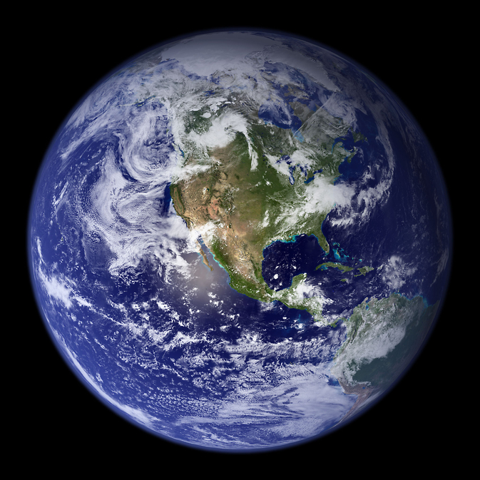

Space exploration has been one of humanity's greatest achievements, allowing us to learn about our universe and push the boundaries of what is possible. The first human spaceflight occurred in 1961 when Yuri Gagarin orbited Earth aboard Vostok 1, marking the beginning of human space exploration. Since then, we have sent astronauts to the Moon, built space stations, and explored our solar system with robotic probes. The International Space Station has been continuously inhabited by humans since 2000, serving as a laboratory for scientific research and international cooperation.
Modern space exploration focuses on both scientific discovery and the potential for human settlement beyond Earth. NASA's Artemis program aims to return humans to the Moon by 2025, with plans to establish a sustainable lunar presence. Private companies like SpaceX are developing technologies for Mars colonization, including the Starship spacecraft designed to carry humans to the Red Planet. The James Webb Space Telescope, launched in 2021, has already provided unprecedented views of distant galaxies and exoplanets, revolutionizing our understanding of the cosmos.

| Agency | Country | Notable Achievement |
|---|---|---|
| NASA | United States | First human Moon landing |
| ESA | European Union | Rosetta comet mission |
| JAXA | Japan | Hayabusa asteroid sample return |
Learn more about space exploration:
NASA Official Website